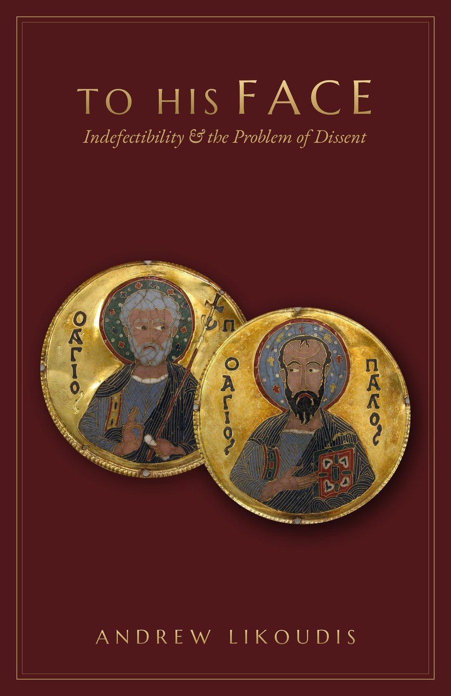

“But when Cephas came to Antioch, I opposed him to his face.” — Galatians 2:11
Taking its title from St. Paul’s confrontation of St. Peter at Antioch, this chapbook treats the indefectibility of the Church, the sensus fidei, and the legitimate boundaries of public theological disagreement.
Against both progressive and traditionalist forms of dissent, it argues that fidelity to the living Magisterium is not the enemy of honest questioning but its proper home.
The volume carries a foreword by Robert Fastiggi and an afterword by Emmett O’Regan. The front cover features Byzantine cloisonné medallions of Ss. Peter and Paul; the back cover reproduces Jusepe de Ribera’s Saints Peter and Paul.
"Andrew Likoudis is lucid and courageous… It is remarkable how Likoudis has produced a text accessible to the layperson, rich enough for the seasoned theologian, and, above all, timely for our situation. I can easily recommend this book to anyone."
Suan Sonna, Director of Apologetics, Diocese of Bridgeport, CT"A clear, concise, and measured contribution to the pervasive discourse on obedience in today’s ecclesial atmosphere… This book engages honestly with the questions of authority, infallibility, and permissible criticism, and offers a response that will benefit any concerned individual, whether or not they are formally trained in theology."
Andrew Mioni, author of Ignorance of Things Divine"Andrew Likoudis offers us careful analysis of assent and dissent within the Church, mindful of the interaction between the different levels of the magisterium, as discerned in the lives of the faithful. He does this in full consciousness of the presence of the Word Incarnate, the face of Him whom we seek in all discernment and in every act of assent."
Very Reverend Canon Francis V. Tiso, PhD, Cathedral of IserniaStay connected with the Foundation
No spam. Unsubscribe anytime.